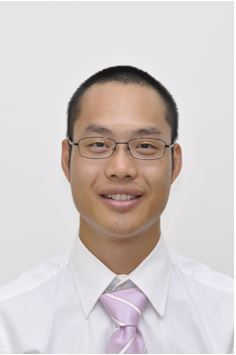
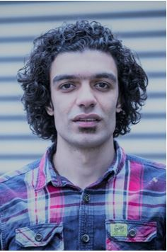

Students & Staffs
Research Associates

Bo Liu
bol36@pitt.edu
Dr. Bo Liu is a Senior Research Associate at Mechanical Engineering and Materials Science Department, University of Pittsburgh. He received his dual B.S. degree in Optical Engineering from Huazhong University of Science and Technology and mechanical engineering from Wuhan University of Technology (2007). He earned M.S. in electromechanical engineering from the Wuhan University of Technology (2010) and the Ph.D. in electrical and computer engineering at Virginia Tech (2016). After his graduation, Dr. Liu joined National Energy Technology Laboratory as a Research Engineer for 4 years. He is the inventor of Distributed Temperature Sensing technique using single crystal fiber. And he is the primary designer of over three sets of Laser Heated Pedestal Growth system at Virginia Tech, NETL, and Pitt. His awards include Recipient of Carnegie Science Awards in the Innovation in Energy (2020) and Finalist of William M. Steen Award (2019) (National Energy Technology Laboratory, NETL DOE). He is the review panel for DOE SBIR and editor for journal MDPI. Dr. Liu’s research interest focuses on fabrication and sensing application of single crystal fiber.
Visiting Research Faculty

Ahmed Talaat
aht17@pitt.edu
Dr. Ahmed Talaat is a Visiting Research Faculty at the University of Pittsburgh with an excellent track record and expertise on the topic of soft magnetic amorphous and nanocrystalline alloys. In 2018, he received the Extraordinary Ph.D. Thesis Award from the University of the Basque Country (Spain) along with numerous awarded fellowships such as the Marie Skłodowska-Curie Fellowship from the EU.
Current Doctoral Students

Suraj M.V.
sum84@pitt.edu
Suraj received his B.Tech and M.Tech in Metallurgical and Materials Engineering from Indian Institute of Technology Madras. Currently, his thesis work is aimed at nano structuring soft magnetic ferrites for the next generation of power electronic applications. Broadly, his research interests include thermodynamic modelling, electron microscopy and atom probe tomography.

Yang-Duan Su
yas57@pitt.edu
Yang-Duan received his B.S. in Chemical Engineering from National Cheng-Kung University in Taiwan. Before he earned a M.S. in Energy Science, Technology and Policy from Carnegie Mellon Univeristy, he was an instrumentation engineer at CTCI Corp., Taiwan. He previously worked on multi-objective optimization of power inductors for EV applications. He is now researching embedded fiber optic sensors for electrical assets including inductors, transformers and EV battery systems.

Pengdi Zhang
pez37@pitt.edu
Pengdi received his B.S. in Energy and Power Engineering from the University of Shanghai for Science and Technology. Before transferring to the Ph.D. position in Prof.Paul's Group, his research interest lies within the area of combining machine learning with fluid mechanics prediction during the M.S. program in Mechanical Engineering from the University of Pittsburgh. He believes that the application of machine learning algorithms will bring a research efficiency boost to traditional fields. The next research direction for him is the combination of ML and structural-acoustic detection. During leisure time, he enjoys film and swimming.